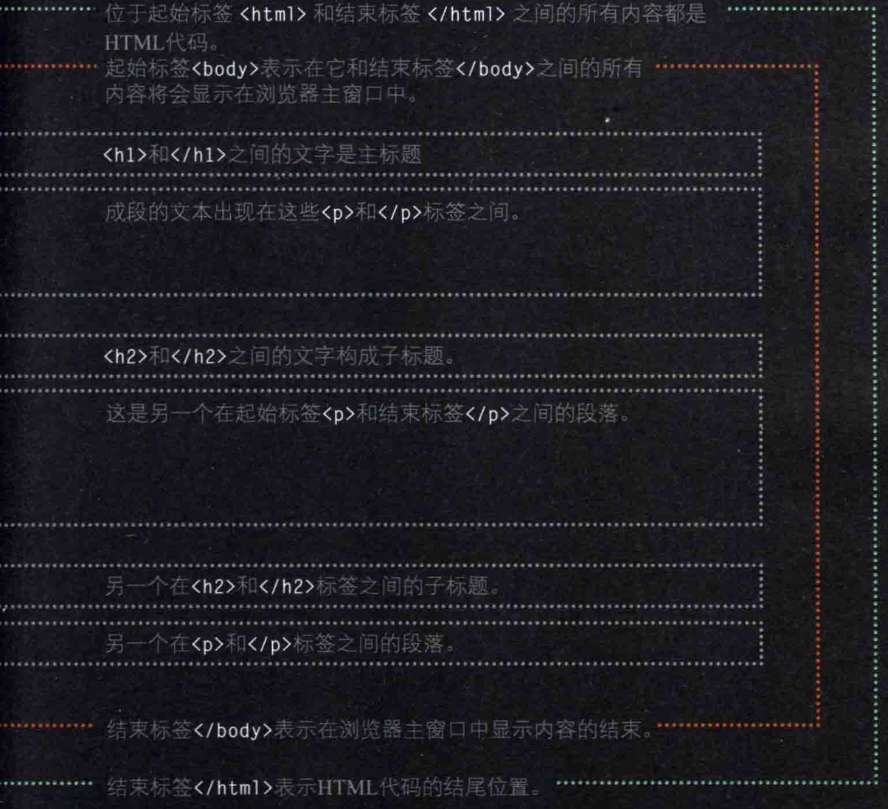

结构
<html>与</html>之间是 HTML 代码.<body>与</body>之间的所有内容都会显示在浏览器的主窗口里.<head>与</head>是包含有关此页面的一些信息的元素.<title>与<title>之间的内容会显示在浏览器顶端或者选项卡里，常出现在<head>里. 
文本
<h1><h2><h3><h4><h5><h6><h7>是 HTML 的六个标题级别，顺序是从大到小排列.<p>与</p>之间的内容构成了 HTML 里的段落.<b>与</b>之间的内容会变成粗体, 只是外观改变, 没有其他含义.<i>与</i>之间的内容会变成斜体, 只是外观改变, 没有其他含义.<sup>与</sup>之间的内容会变成幂次那种类型的上标.<sub>与</sub>之间的内容会变成化学式那种类型的下标.- 适当多余的空格和回车的处理会加强代码的可读性.
<br />之后的文字会换行显示.<hr />用来插入水平线<strong>与</strong>之间的内容会变成粗体, 不仅外观改变, 表示内容十分重要.<em>与</em>之间的内容会变成斜体, 不仅外观改变, 还有强调作用.